Stratum
A monochrome packaging system for a skincare line, built around material honesty.

Stratum needed packaging that felt clinical and premium at once — “where materials meet skin” — across four products (cleanser, serum, moisturizer, sunscreen) that had to read as one family from across a shelf.
A restrained monochrome palette, textured matte surfaces and a strict numbering system (01–04) let the line read as a considered system rather than four separate SKUs, with German-language copy for the target market.
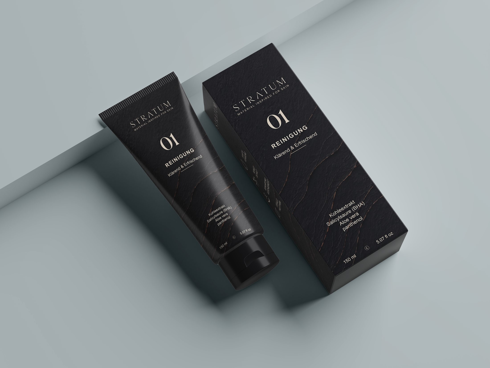
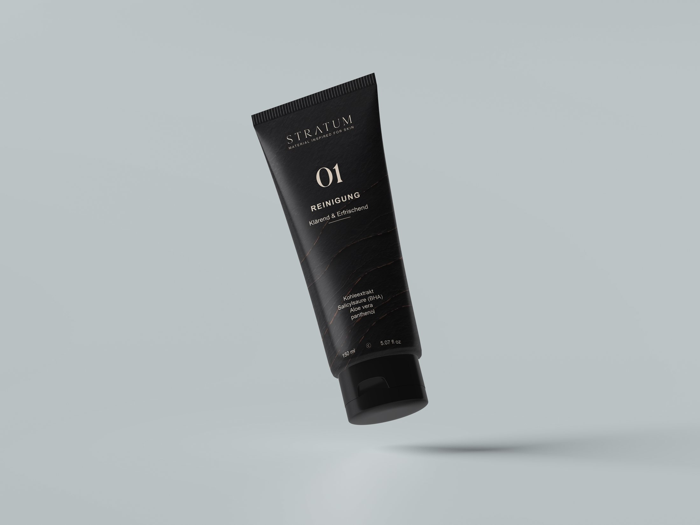
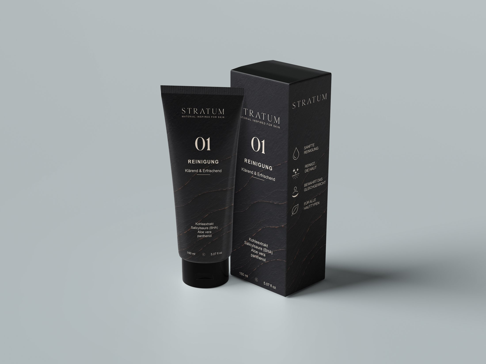
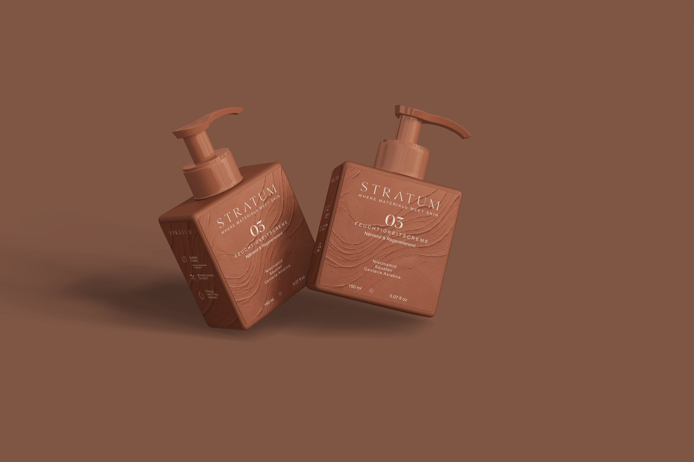
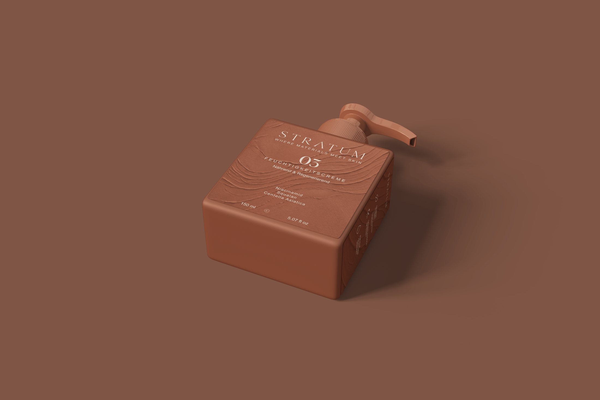
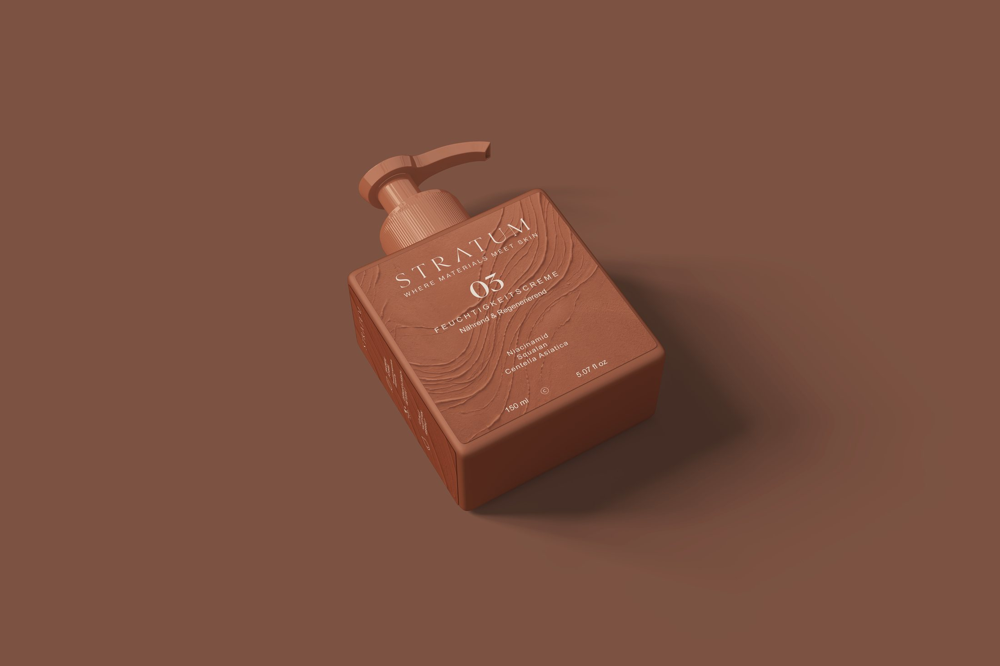
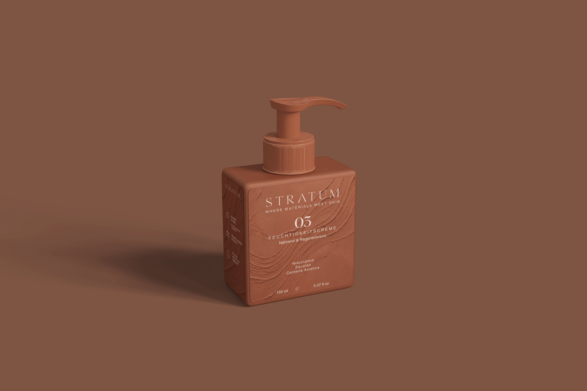
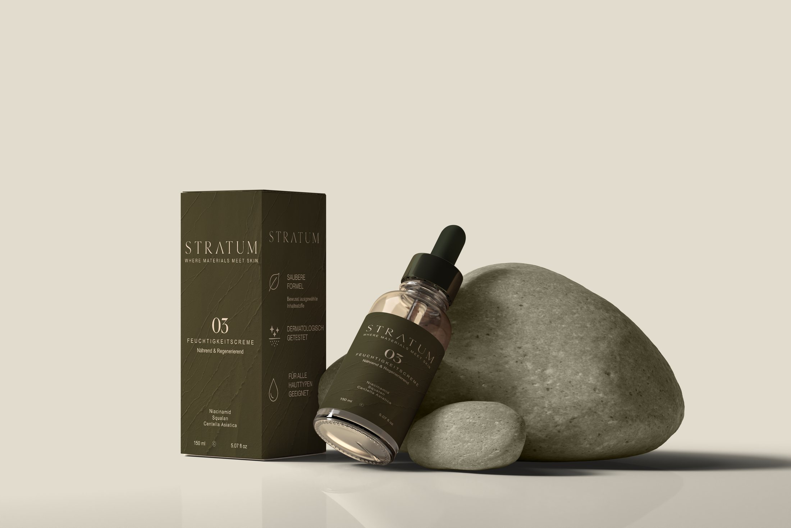
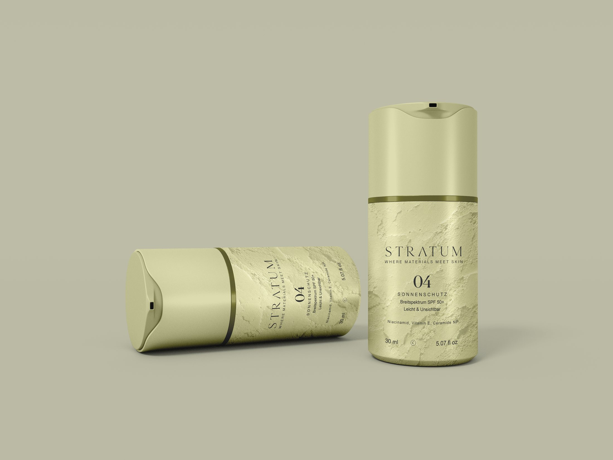
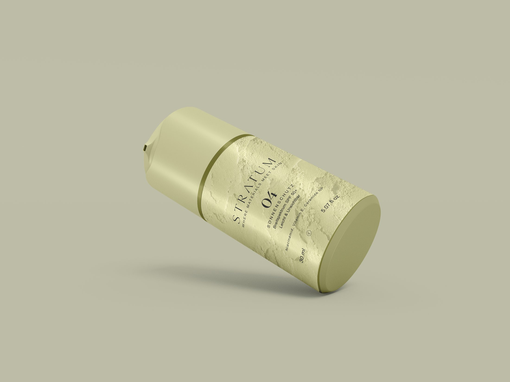
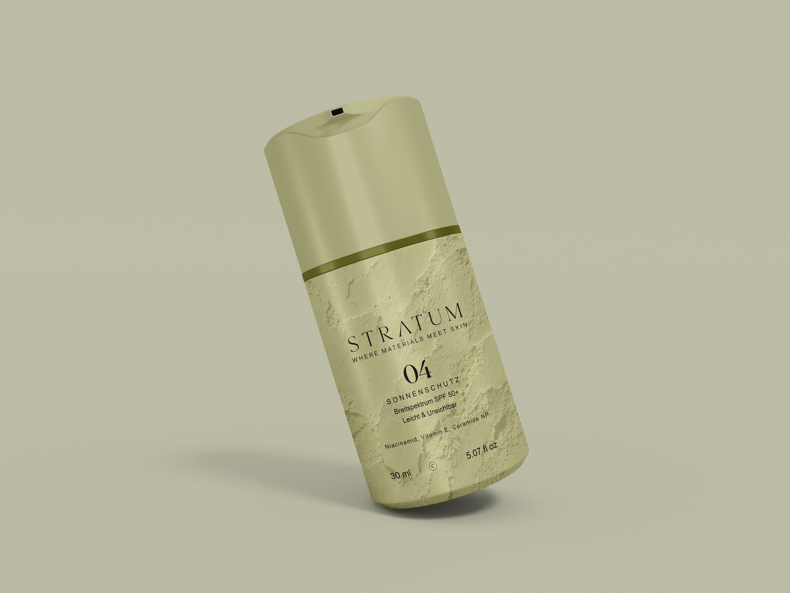
A quiet, tactile packaging suite that lets texture and typography carry the premium feel instead of color or ornament.